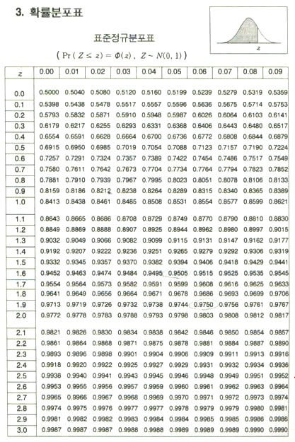
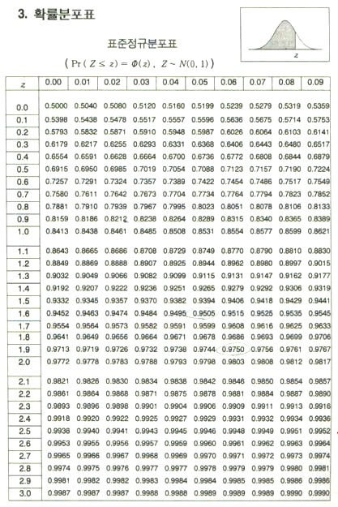

- 2-1. 확률질량함수
이산확률변수 x가 가질 수 있는 모든 값 x1, x2 , x3 , ... , xn 에
이 밧을 가질 확률 p1, p2, p3 , pn이 대응되는 함수로P(X = xi) = pi( i =1,2,3, ... n) 를
이산확률변수 x의 확률질량함수라 하고 확률질량함수의
대응 관계를 이산확률변수 x의 확률분포라고 한다.

- 2-2. 확률질량함수의 성질
1) 확률은 0 이상 1 이하의 값을 갖는다.
2) 모든 확률을 합한 것은 (발생 가능한 모든 경우에 대한 확률의 합이므로) 1이다.
3) 특정 범위의 확률은 해당 범위에 속하는 확률들의 합과 같다.
- 2-3. 이산확률변수의 기댓값과 표준편차의 성질
1) 기댓값 ( 평균 ) : E(X) = x1p1 + x2p2 + x3p3 + ... + xnpn
2) 분산 : V(X) = E((X - m)2) = ( x1 - m)2p1 + (x2 - m)2p2 + ... + (xn- m)2pn V(X) = E(X2) - {E(X)}2
3) 표준편차 : σ (X) = 제곱근 V(X)
4) 이산확률변수 X와 두 상수a와 b에 대하여 E(aX+b)=aE(X)+b, V(aX+b)=a2V(X), σ(aX+b)=|a|σ(X)
- 2-4. 이항분포
이항분포: 한 번의 시행에서 사건 A가 일어날 확률이 p로 일정할 때,
n번의 독립시행에서 사건 A가 일어나는 횟수를 확률변수 X라 하고
q=1-p라면 확률변수 X의 확률분포를 이항분포라 하고 기호
B(n, p) n은 시행 횟수, p는 확률
1) 이항분포의 평균 : E(X) = np
2) 이항분포의 분산 : V(X) = npq
3) 이항분포의 표준편차 : σ(X) = 제곱근 npq
이항분포B(n,p)에서 n의 값이 커지게 되면 확률분포의 그래프는 좌우가 대칭인 종 모양의 곡선에 가까워진다.
- 2-5. 큰수의 법칙
큰수의 법칙: 어떤 시행에서 사건 A가 일어날 수학적 확률이 p일 때
n번의 독립시행에서 사건 A가 일어나는 횟수를 X라 하면, 아무리 작은 양수
h를 택하더라도 n을 충분히 크게 하면 확률은 1에 가까워진다.
즉 큰수의 법칙에 의하여 통계적 확률은 수학적 확률에 가까워짐을 알 수 있다.


 
